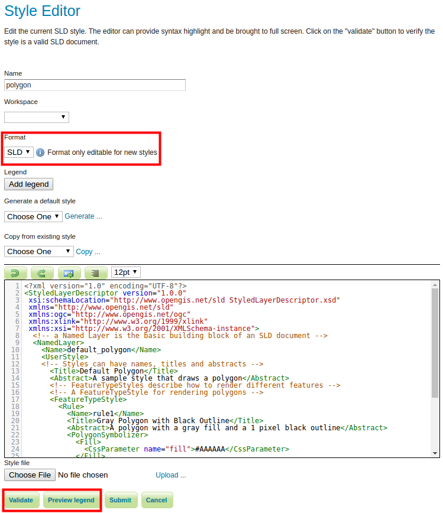
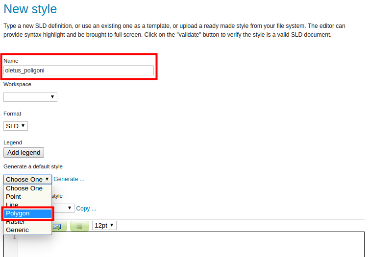
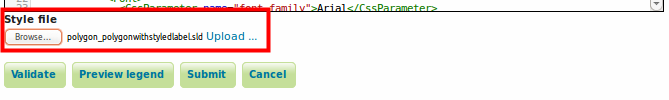
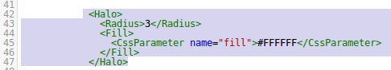
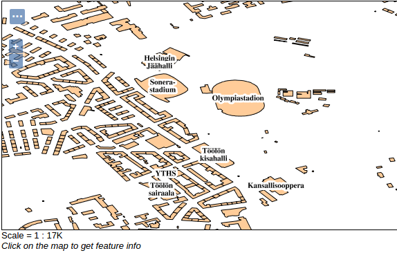
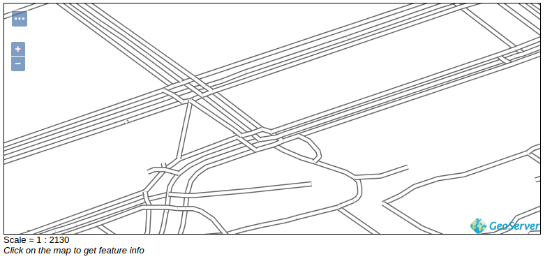

HARJOITUS 1.4: KUVAUSTEKNIIKAN PERUSTEET (SLD)
Harjoituksen sisältö
Harjoituksessa käsitellään eri aineistoille sovellettavia kuvaustekniikoita ja hyödynnetään SLD-tyylejä karttojen visualisointiin.
Harjoituksen tavoite
Harjoituksen jälkeen opiskelija osaa hyödyntää peruskuvaustekniikoita GeoServerillä eri aineistojen visualisointiin, käyttäen SLD-kieltä.
Arvioitu kesto
40 minuuttia.
Valmistautuminen
Käynnistä koneessa web-selain ja kirjaudu osoitteeseen:
Aiemmissa harjoituksissa on luotu GeoServerin palvelimelle taso rakennukset, johon luodaan nyt kuvaustekniikka.
GeoServerin kuvaustekniikka
WMS-palvelut visualisoivat karttakuvia GeoServerissä ennalta määritetyillä kuvaustekniikoilla. Tähän asti olemme käyttäneet oletuskuvaustekniikoita aina lisättyämme uusia aineistoja, esimerkiksi kun olemme esikatselleet jotain tasoa.
Avaa päävalikosta Layers-näkymä ja rakennukset-taso. Avaa sitten Publishing-välilehti. 
Huomaa, että WMS Settings -kohdasta löytyy Default Style -valikko, johon on valittu polygon-kuvaustekniikka.

SLD-kuvaustekniikka
Geoserverin tyylit on määritelty Styled Layer Descriptorilla (SLD), joka on XML-kieli.
Poistu tason näkymästä ja avaa Data → Styles näkymä päävalikon alta. Tässä näkymässä määritellään tyylit (kuvaustekniikat), joita WMS-karttatasoissa käytetään.
Listalla on parikymmentä tyyliä valmiina, jotka tulevat GeoServerin asennuksen mukana. Katsotaan aluksi, miltä rakennukset-tason käyttämä polygon-tyyli näyttää. Avaa se painamalla polygon-kohtaa.

Huomaa, että Format on SLD. Tutustu nyt tyylin koodiin: se muistuttaa verkkosivujen HTML-koodia. Siinä voit tunnistaa muun muassa <Fill>-ja <Stroke>-tagit, jotka määrittelevät monikulmion täyte- ja rajaviivan värejä.
Koodin toimivuutta voi kokeilla Validate- ja selitteen esikatselua Preview legend -toiminnolla.
Palaa Styles-näkymään painamalla Cancel.
Uuden tyylin luominen
Laaditaan nyt oma kuvaustekniikka Helsingin rakennukset -aineistolle.
Data → Styles näkymässä, lisää uusi SLD-tyyli painamalla Add a new style.
Anna uudelle tyylille nimeksi oletus_polygoni. Valitse workspace:ksi helsinki.

Helpottaakseen omien tyylien kirjoittamisen aloittamista, SLD-koodikentän täyttämiseen voidaan valita malliksi GeoServerin oletustyylit tai kopioida olemassa oleva tyyli.
Valitse Generate a default style -alasvetovalikosta Polygon ja paina sen jälkeen Generate…

Voit nyt testata SLD-koodia Validate-toiminnolla. Testauksen onnistuminen näkyy ilmoituksena sivun yläpuolella.

Tallenna muutokset painamalla ensin Submit.
SLD-kuvaustekniikan käyttöönotto
Kun uusi tyyli on luotu, voimme käyttää sitä aineistojen visualisoinnissa, esimerkiksi Helsingin rakennuksien esittämiseen kartalla. Sitä varten ilmoitamme GeoServerille, millä tyylillä rakennukset-taso on piirrettävä.
Avaa rakennukset-tason editointinäkymä päävalikosta Data → Layers.
Publishing välilehdellä valitse Default Style -valikosta uusi oletus_polygoni-tyyli.
Paina sitten Save.
Data → Layer Preview näkymästä voit nyt esikatsella rakennukset-tasoa, uusi tyyli on nyt käytössä.

SLD Cookbook
Kannattaa tutustua SLD-tyylien kirjoittamiseen SLD Cookbook -sivuilta. SLD Cookbook on osa GeoServerin verkkodokumentaatiota ja sisältää erilaisia kuvaustekniikkaesimerkkejä.
Käytetään seuraavaksi pohjana uuteen tyyliimme esimerkkiä SLD Cookbookista.
Avaa uudessa selainikkunassa GeoServerin SLD Cookbook alla olevasta linkistä (tai voit etsiä selaimella Googlesta “geoserver sld cookbook”). Etsi Polygon with styled label -kohta ja paina sitä:
Löydät lyhyen esityksen kuvaustekniikasta ja SLD-koodin. Tutustu lyhyesti koodiin ja yritä löytää tärkeimmät elementit (tagit) kuten monikulmion viivan ja täytön värit sekä tekstien fonttimääritelmät. Voit kirjoittaa muistiinpanoja tärkeimmistä elementeistä ja määritelmistä harjoituksen viimeiselle sivulle.
Esimerkissä <Stroke>-koodissa on määritelty reunaviivan väri ja paksuus.
<TextSymbolizer> sisältää tekstitysominaisuudet eli labelit (kartan kohteiden, esimerkiksi katujen nimet) kuten <Label>, joka määrittää tekstejä varten käytettävän kentän/sarakkeen ominaisuustiedoista.
Tavanomaisen SLD-kielen lisäksi tämä mallikoodi sisältää kaksi GeoServerin omaa lisäosaa, joita käytetään SLD:ssä tekstien sijoittamiseen. Tunnistat tällaiset kohdat koodista <VendorOption...>-tageista.
Etsi SLD-tyylien esimerkkisivuilta View and download the full “Polygon with styled label” SLD -linkki, avaa se uudessa ikkunassa ja tallenna kyseinen sivu .sld-tiedostona, käyttämällä selaimen tallennus (save as / tallenna nimellä) toimintoa. Anna tiedostolle nimi, jonka muistat vielä myöhemmin (esimerkiksi polygon_polygonwithstyledlabel.sld).
Palaa nyt GeoServerin käyttöliittymään ja paina koodilaatikon alta Browse. Etsi äskettäin ladattu SLD-tyyli levyltä ja paina lopuksi Upload.

Anna uudelle tyylille nimeksi rakennukset. Valitse helsinki workspace:ksi.
Psst! Huomaa, että jos olit aiemmin määritellyt tyylin nimen ja workspacen, GeoServer mahdollisesti korvaa niitä kun lataat .sld tiedostoa.
Voit nyt testata SLD-koodia Validate-toiminnolla. Voit esikatsella karttamerkkien selitettä painamalla Preview legend.
Muokkaa vielä monikulmion SLD-tyyli seuraavasti:
Täyteväri (PolygonSymbolizer → FILL) vaaleanpunaiseksi (#FFCC99)
Reunaviivan väri (PolygonSymbolizer → Stroke) mustaksi (#000000)
Reunaviivan paksuudeksi 0.5
Aseta ensimmäisellä rivillä encoding=“UTF-8”
Psst! Huomaa, että GeoServerissä desimaalierottimena toimii ainoastaan piste “.”. Tämä pätee kaikissa GeoServerin asetuksissa.
Tallenna sitten muutokset painamalla ensin Submit.
Lopuksi vaihda rakennukset-tasolle tyyliksi rakennukset-tyyli (Data → Layers → rakennukset → Publishing).

SLD-kuvaustekniikan muokkaaminen
Lisätään vielä teksteille puskuri (halo), niin tekstiä on helpompi lukea.
Palaa Styles-näkymälle ja valitse taas rakennukset-tyyli. Poista SLD-koodista <TextSymbolizer>-tagin sisältä:
<Fill>
<CssParameter name=“fill”>#000000</CssParameter>
</Fill>
ja korvaa sen tilalle:
<Halo>
<Radius>3</Radius>
<Fill>
<CssParameter name=“fill”>#FFFFFF</CssParameter>
</Fill>
</Halo>
SLD-koodi ikkunassa näyttää tältä:

Paina sitten Validate.
Jos koodin käytössä tulee virheilmoituksia tai se ei toimi, pyydä kouluttajalta apua. Muuten paina Submit, niin tyyli tallentuu.
Päivitetty tyyli on heti käytössä palvelimella ja sitä voi esikatsella rakennukset-tason avulla. Selainikkunan voit päivittää painamalla F5-näppäintätai CTRL+R-näppäimiä.

Osoitteessa http://colorbrewer2.org/ voi tutustua erilaisiin visualisointityyleihin ja valita sopivia värejä visualisointiin.
Tiestön tyylin luominen
Luo nyt uusi tyyli, jota tullaan käyttämään tiestön kuvaamiseen.
Samalla tavalla kuin aiemmin, käytä hyväksi GeoServerissa olemassa oleva tyyli. Tiger_roads-tyyli sopii tiestön kuvaamiseen. Esikatsele tiger_roads-tasoa.

Kadut on kuvattu leveinä valkoisina kaistoina kun karttaa lähennetään tarpeeksi. Tehdään seuraavaksi samankaltainen tyyli aikaisemmin julkaistua tiesto-aineistoa varten.
Luo uusi tyyli (Data → Styles → Add a new style), nimeä se tiesto. Kopioi simple_roads tyyli.
Etsi <Rule> kappaleen sisällä oleva <Title> ja lisää sen alle:
<MinScaleDenominator>32000</MinScaleDenominator>

Paina sitten Submit.
Aseta vielä tiesto-tason oletustyyliksi tiesto-tyyli. (Data → Layers → helsinki:tiesto → Publishing).

Paina Save ja esikatsele tasoa. Huomaa, että kun loitonnat karttaa siten että mittakaava on pienempi kuin 1:32 000, tiet eivät enää tule näkyviin.
Lisätään nyt tiet myös mittakaavaan 1:32 000 ja suuremmille. Tämä onnistuu luomalla <Rule>-osio, jossa maksimimittakaava (<MaxScaleDenominator>) on määritelty 32000 arvoksi.
Voit hyödyntää edellisen sääntö osiota: kopioi koko <Rule> kappale. Lisää se </Rule> jälkeen.

Muuta vielä:
<MinScaleDenominator>32000</MinScaleDenominator>
... tällaiseksi:
<MaxScaleDenominator>32000</MaxScaleDenominator>
Vaihda viivan väri harmaaksi #666666, otsikoksi Paksu viiva ja paksuudeksi 7.

Paina Submit ja esikatsele.Huomaa, että nyt kun lähennät karttaikkunaa (suurennat mittakaavaa), niin teiden väri ja paksuus muuttuu.
Lisätään vielä täyteväri viivoille lisäämällä uusi sääntö. Kopioi edellinen <Rule> -koodi kappale (jolla on <MaxScaleDenominator>32000</MaxScaleDenominator>) ja liitä se kopioidun kappaleen jatkoksi.
Muuta taas otsikko, väri ja paksuus kuvan mukaisesti:

Tämä viiva tulee piirretyksi edellisen paksumman viivan päälle, josta aiheutuu viivareunan efekti.
Esikatsele lopputulosta:
